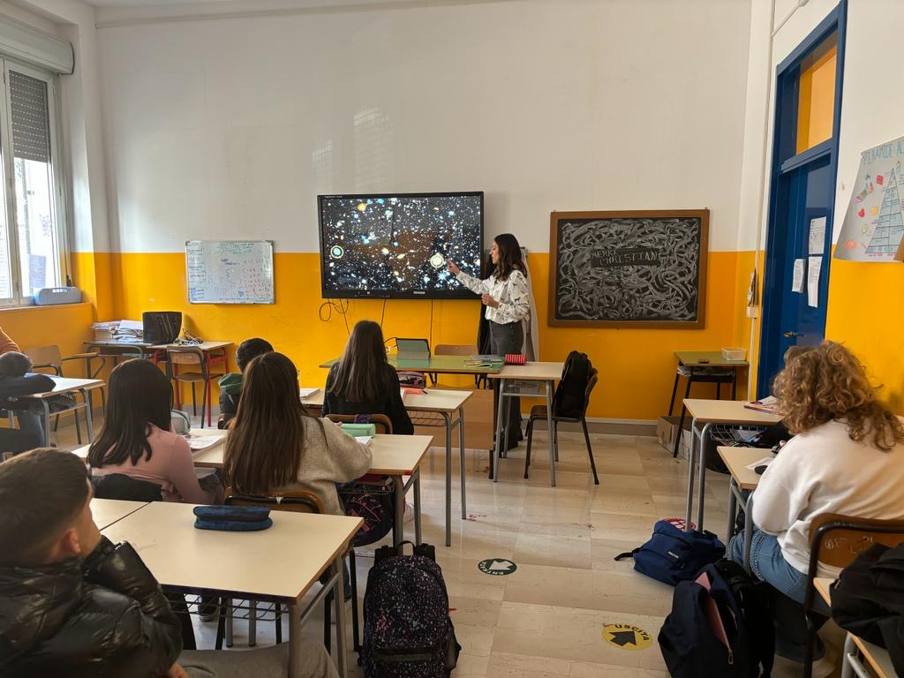
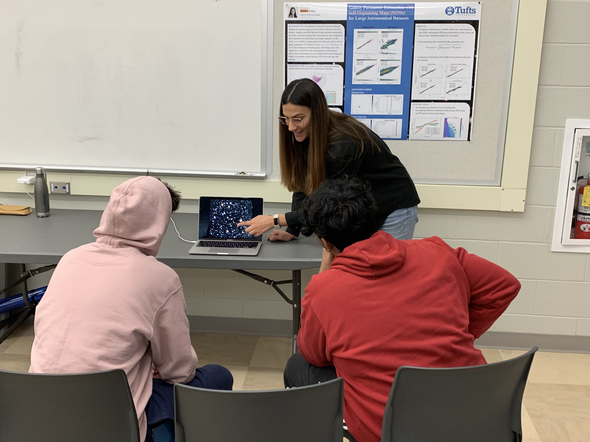

TEDxApricena 2026
Galassie nell’era dei dati
October 2026 · Talk in Italian
In my TEDx talk, I discuss galaxies, astronomical datasets, and the role of machine learning in studying the Universe.
Why outreach matters to me
As a first-generation college student, I understand the challenges and uncertainties that come with navigating the path to higher education. This is why outreach is deeply personal and important to me. I especially visit middle and high schools in communities where many students will probably be the first in their families to attend college, offering them encouragement and direction. Every outreach presentation I give begins with a section on "how to become an astrophysicist, or scientist," outlining the degrees, skills, and steps required, offering them the roadmap I once searched for myself. I remember being in their shoes, full of dreams and curiosity, and it is my goal to inspire them to follow their aspirations.
Engaging with students is always a rewarding experience. Their curiosity and excitement remind me why I love what I do, and it’s a privilege to be able to spark an interest in science and learning that could shape their futures.
Outreach activities
-
Talk "Galaxies in the Universe" at Scuola Media "Rodari" (Apricena, FG, Italy)
January 12 and December 20, 2023
-
Reverse Science and Engineering Fair, Medford High School
Poster presentation in November 2022 and poster judging in April 2023.
-
Talk "Galaxy Evolution and Artificial Intelligence" at the Pioneer Charter School of Science (Saugus, MA)
November 17, 2022
-
Guest on the Co.Scienza Podcast (in Italian), "Simulare Universi"
August 2021 · Interview about CAMELS (Cosmology and Astrophysics with MachinE Learning Simulations)
Photos

